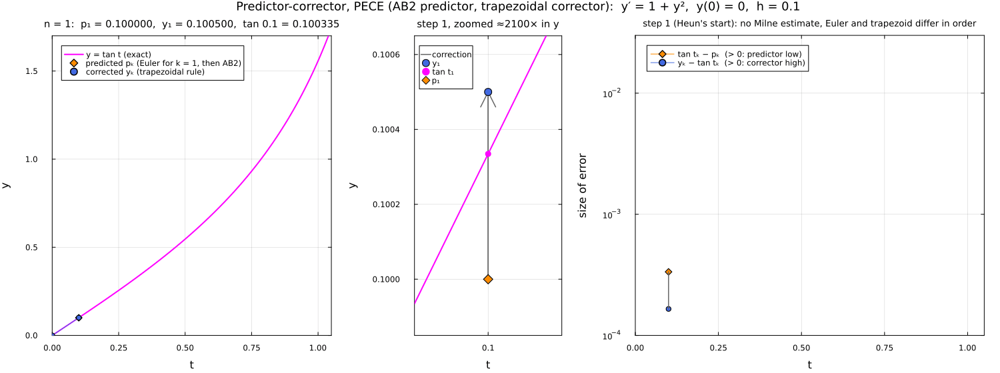
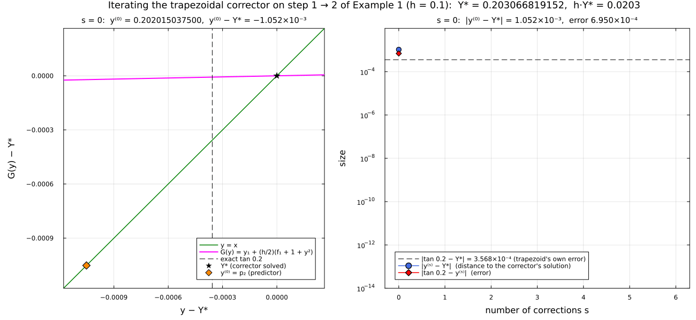
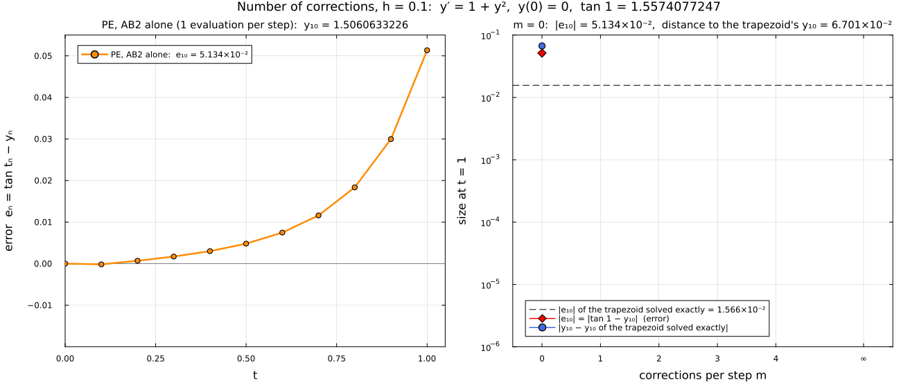

Predictor-Corrector Methods
Source inspiration: (Mathew 2000-2019).
Description
A predictor-corrector method approximates the solution of an initial value problem \(y' = f(t, y)\), \(y(t_0) = y_0\), on a grid \(t_n = t_0 + nh\). It pairs two multistep formulas. The corrector is implicit: the new value \(y_{n+1}\) appears on both sides, inside \(f(t_{n+1}, y_{n+1})\). Implicit formulas typically have smaller error constants and better stability than explicit ones of the same order, but solving them exactly at every step means solving a nonlinear equation. The predictor is explicit and supplies a first estimate \(p_{n+1}\); the corrector is then applied once, or a few times, with the unknown slope replaced by the slope at the latest estimate. One step of the basic scheme, called PECE, is
\[ \underbrace{p_{n+1} = \text{explicit formula}}_{\text{P}}, \quad \underbrace{f^{*}_{n+1} = f(t_{n+1}, p_{n+1})}_{\text{E}}, \quad \underbrace{y_{n+1} = \text{implicit formula with } f^{*}_{n+1}}_{\text{C}}, \quad \underbrace{f_{n+1} = f(t_{n+1}, y_{n+1})}_{\text{E}}. \]
Repeating the correct-evaluate pair \(m\) times gives the mode P(EC)\(^m\)E. The two estimates \(p_{n+1}\) and \(y_{n+1}\) come for free at every step, and when the two formulas have the same order their difference estimates the local error of the step (Milne’s device). That estimate drives step-size control, and it can also be added back to the computed values (a modifier). Two fourth-order pairs have their own pages: Adams-Bashforth-Moulton and Milne-Simpson. This page sets out the general framework and works it through the simplest Adams pair, the two-step Adams-Bashforth predictor with the trapezoidal corrector, on \(y' = 1 + y^2\), \(y(0) = 0\), whose exact solution is \(y = \tan t\).
Mathews’ module for this topic was never written: the archive’s page for it is an “under construction” placeholder, with only a bibliography page beside it. This page is therefore written from standard treatments of the subject, such as the chapter on predictor-corrector methods in Lambert (1991). Every number on this page was computed for it: the runs of the examples in 50-digit arithmetic, each reproduced by an independent 200-bit implementation, the error constants by symbolic Taylor expansion, and the stability intervals from the roots of the characteristic polynomials.
Animations
Each animation below runs the page’s worked problem, \(y' = 1 + y^2\), \(y(0) = 0\) on \(0 \le t \le 1\), whose exact solution is \(y = \tan t\), through the AB2 predictor and the trapezoidal corrector (9) with \(h = 0.1\) and the Heun starting value \(y_1 = 0.1005\) of the Worked Examples. Case 1 follows Example 1 one step per frame, Case 2 the corrector iterates of Example 2(a) one iterate per frame, and Case 3 the modes of Example 2(b) one mode per frame. In every case the right-hand panel plots sizes of errors or distances on a logarithmic scale. Each frame is shown for one second, and the last for three. The scripts compute in 256-bit floating point and check their results against values in the tables of the examples.
Mathews’ module for this topic was never written, and his animation archive has nothing for it (its folder for differential equations holds animations of the Euler, Heun, modified Euler, Taylor, Runge-Kutta, Adams and Milne methods, which belong to those pages), so all three animations are new, with no Mathews original. Not animated are Example 3, which compares whole runs at five step sizes (the orders of the modes and of the modified method PECLE, and the accuracy of Milne’s estimate at \(t_n = 0.5\)), the PEC mode in the table of Example 2(b), and the stability intervals.
Julia source scripts that generated these animations are linked under each case.
Case 1 — PECE step by step (Example 1), \(h = 0.1\), \(n = 1\) to \(10\)
Behavior: The left panel shows each predicted value \(p_n\) (orange diamond) and corrected value \(y_n\) (blue) against \(\tan t\) (magenta). At that scale the two nearly coincide, so the middle panel magnifies the current step vertically: at every step the predictor lands below \(\tan t_n\) and the correction carries the value above it (\(\tan t_n - p_n > 0\) and \(y_n - \tan t_n > 0\) for \(n = 1, \ldots, 10\); step 1 is Heun’s starting step, with Euler’s method as predictor). In the right panel the corrector’s error \(y_n - \tan t_n\) grows at every step, to \(8.921 \times 10^{-3}\) at \(t = 1\). The AB2 predictor’s error falls from \(6.950 \times 10^{-4}\) at \(n = 2\) to \(5.790 \times 10^{-4}\) at \(n = 4\) and then rises to \(4.790 \times 10^{-3}\), so from \(n = 4\) on \(p_n\) is closer to \(\tan t_n\) than \(y_n\) is. That is no reason to stop at the predictor: \(p_n\) is built from corrected values that are already too high, which partly cancels its own error in the other direction (\(1.206 \times 10^{-2}\) at \(n = 10\) when started from exact values), and the predictor run alone ends with an error of \(5.134 \times 10^{-2}\) (Case 3). From \(n = 2\) on, the green squares are Milne’s estimate \(-\tfrac16(y_n - p_n)\) of the local error of the step, and the black crosses the true local error, both negative. The estimate is larger in size at every step, and the ratio of the two rises at every step, from \(1.041\) to \(1.469\), as in the table of Example 1.

Case 2 — Iterating the corrector (Example 2(a)), \(s = 0\) to \(6\)
Behavior: The left panel is the cobweb diagram of the fixed-point iteration \(y^{[s+1]}_2 = G\bigl(y^{[s]}_2\bigr)\), \(G(y) = y_1 + 0.05\,(f_1 + 1 + y^2)\), started from the predictor \(p_2\) and drawn relative to the solution of the corrector equation, \(Y^* = 0.203066819152\). Near \(Y^*\) the slope of \(G\) is \(hY^* = 0.0203\), so \(G\) is almost flat and each correction shrinks the distance to \(Y^*\) about fifty-fold; the window zooms in at every frame to keep the latest step in view, from a width of \(1.4 \times 10^{-3}\) in the first two frames to \(5.0 \times 10^{-12}\) in the last. The iterates increase toward \(Y^*\) from below, and the first correction jumps past the exact value: \(p_2 < \tan 0.2 < y^{[1]}_2 < Y^*\). The dashed line marking \(\tan 0.2\) leaves the window after frame \(s = 1\). In the right panel the distance \(\lvert y^{[s]}_2 - Y^* \rvert\) falls from \(1.052 \times 10^{-3}\) to \(7.355 \times 10^{-14}\), by the factor \(0.02025\) at the first correction and \(0.02031\) at each later one, while the error \(\tan 0.2 - y^{[s]}_2\) levels off at \(-3.568 \times 10^{-4}\), the trapezoidal rule’s own error. The single correction of PECE, with error \(-3.355 \times 10^{-4}\), gives the iterate closest to \(\tan 0.2\).

Case 3 — The number of corrections (Example 2(b)), \(m = 0, 1, 2, 3, 4\) and the corrector solved exactly
Behavior: The left panel adds the error \(e_n = \tan t_n - y_n\) along the run for one mode per frame, and the right panel plots, against the number \(m\) of corrections per step, the size of \(e_{10}\) at \(t = 1\) (red) and the distance of \(y_{10}\) from the \(y_{10}\) of the trapezoidal rule solved exactly (blue). The predictor alone (PE, \(m = 0\)) ends low, with \(e_{10} = 5.134 \times 10^{-2}\); its error is positive from \(n = 2\) on. One correction (PECE) reduces the error to \(-8.921 \times 10^{-3}\), with the opposite sign, and every further correction increases its size, to \(1.486 \times 10^{-2}\), \(1.556 \times 10^{-2}\) and \(1.565 \times 10^{-2}\), toward the \(1.566 \times 10^{-2}\) of the corrector solved exactly. The blue curve shows why: each extra correction moves \(y_{10}\) closer to the corrector’s value, reducing the distance by a factor between \(7.2\) and \(9.9\), from \(6.701 \times 10^{-2}\) for PE to \(1.472 \times 10^{-5}\) for P(EC)\(^4\)E, and what remains is the corrector’s own error. In every mode with at least one correction, \(e_n < 0\) at every step.

Linear Multistep Formulas
A \(k\)-step linear multistep formula for \(y' = f(t, y)\) computes \(y_{n+1}\) from the \(k\) previous values and slopes \(f_j = f(t_j, y_j)\):
\[ y_{n+1} = \sum_{j=0}^{k-1} a_j\, y_{n-j} + h \sum_{j=-1}^{k-1} b_j\, f_{n-j}. \tag{1} \]
It is explicit if \(b_{-1} = 0\), so that \(y_{n+1}\) is given directly, and implicit if \(b_{-1} \neq 0\), so that \(y_{n+1}\) also appears on the right in \(f_{n+1} = f(t_{n+1}, y_{n+1})\).
Replace every \(y_j\) in (1) by the exact value \(y(t_j)\) and every \(f_j\) by \(y'(t_j)\). The local truncation error is the amount by which \(y(t_{n+1})\) then fails to satisfy (1). The formula has order \(p\) and error constant \(C_{p+1}\) if, for every smooth \(y\),
\[ y(t_{n+1}) - \Bigl[\sum_{j=0}^{k-1} a_j\, y(t_{n-j}) + h \sum_{j=-1}^{k-1} b_j\, y'(t_{n-j})\Bigr] = C_{p+1}\, h^{p+1}\, y^{(p+1)}(t_n) + O(h^{p+2}). \tag{2} \]
The leading term \(C_{p+1} h^{p+1} y^{(p+1)}\) is the principal local truncation error. Errors on this page are always exact minus computed.
The formulas used on this page and on the two linked pages are listed below; each order and error constant was obtained by expanding (2) in a Taylor series about \(t_n\).
| Formula | Type | \(y_{n+1} = \ldots\) | Order | \(C_{p+1}\) |
|---|---|---|---|---|
| Euler | explicit | \(y_n + h f_n\) | 1 | \(\tfrac12\) |
| Adams-Bashforth 2 (AB2) | explicit | \(y_n + \tfrac{h}{2}(3f_n - f_{n-1})\) | 2 | \(\tfrac{5}{12}\) |
| Trapezoidal rule (AM2) | implicit | \(y_n + \tfrac{h}{2}(f_{n+1} + f_n)\) | 2 | \(-\tfrac{1}{12}\) |
| Adams-Moulton 3 (AM3) | implicit | \(y_n + \tfrac{h}{12}(5f_{n+1} + 8f_n - f_{n-1})\) | 3 | \(-\tfrac{1}{24}\) |
| Adams-Bashforth 4 (AB4) | explicit | \(y_n + \tfrac{h}{24}(55f_n - 59f_{n-1} + 37f_{n-2} - 9f_{n-3})\) | 4 | \(\tfrac{251}{720}\) |
| Adams-Moulton 4 (AM4) | implicit | \(y_n + \tfrac{h}{24}(9f_{n+1} + 19f_n - 5f_{n-1} + f_{n-2})\) | 4 | \(-\tfrac{19}{720}\) |
| Milne’s predictor | explicit | \(y_{n-3} + \tfrac{4h}{3}(2f_n - f_{n-1} + 2f_{n-2})\) | 4 | \(\tfrac{28}{90}\) |
| Simpson’s rule (corrector) | implicit | \(y_{n-1} + \tfrac{h}{3}(f_{n+1} + 4f_n + f_{n-1})\) | 4 | \(-\tfrac{1}{90}\) |
In both Adams pairs of the same order, the implicit formula’s error constant is much smaller in size than the explicit one’s: \(-\tfrac{1}{12}\) against \(\tfrac{5}{12}\) (5 times smaller), and \(-\tfrac{19}{720}\) against \(\tfrac{251}{720}\) (about 13 times smaller).
Solving the corrector by iteration
An implicit formula (1) can be written \(y_{n+1} = h\, b_{-1}\, f(t_{n+1}, y_{n+1}) + g_n\), where \(g_n\) collects the known terms. The natural way to solve it is fixed-point iteration, \(y^{[s+1]}_{n+1} = h\, b_{-1}\, f\bigl(t_{n+1}, y^{[s]}_{n+1}\bigr) + g_n\).
Suppose \(f\) satisfies a Lipschitz condition \(|f(t, u) - f(t, v)| \le L\,|u - v|\) for all \(u\) and \(v\). If
\[ h\, |b_{-1}|\, L < 1, \tag{3} \]
then the implicit formula has exactly one solution \(y_{n+1}\), and the iteration converges to it from any starting value; each iteration multiplies the distance to the solution by at most \(h |b_{-1}| L\). This is the contraction mapping theorem. If the Lipschitz condition holds only for \(u\) and \(v\) in a closed interval \(I\), and the map \(y \mapsto h\, b_{-1}\, f(t_{n+1}, y) + g_n\) sends \(I\) into itself, the same holds inside \(I\): the implicit formula has exactly one solution in \(I\), and the iteration converges to it from any starting value in \(I\). Near the solution the factor per iteration is about \(h\,|b_{-1}|\,|\partial f / \partial y|\).
A predictor-corrector method uses an explicit formula to start this iteration close to the solution, and then stops after a fixed number of iterations instead of iterating to convergence.
The Predictor-Corrector Framework
Modes
Take an explicit predictor and an implicit corrector, both of the form (1). Write \(f^{[s]}_{n+1} = f\bigl(t_{n+1}, y^{[s]}_{n+1}\bigr)\). One step in the mode P(EC)\(^m\)E is:
- P (predict): \(y^{[0]}_{n+1} = p_{n+1}\) from the explicit formula, using the stored values \(y_n, y_{n-1}, \ldots\) and \(f_n, f_{n-1}, \ldots\)
- For \(s = 0, 1, \ldots, m-1\):
- E (evaluate): \(f^{[s]}_{n+1} = f\bigl(t_{n+1}, y^{[s]}_{n+1}\bigr)\);
- C (correct): \(y^{[s+1]}_{n+1}\) from the implicit formula with \(f^{[s]}_{n+1}\) in place of \(f_{n+1}\).
- E (final evaluation): \(y_{n+1} = y^{[m]}_{n+1}\) and \(f_{n+1} = f(t_{n+1}, y_{n+1})\), which is stored for the next steps.
In the mode P(EC)\(^m\) the last evaluation is skipped, and the slope stored for later steps is \(f^{[m-1]}_{n+1}\), the slope at the previous iterate. The common modes are:
| Mode | Corrector applications | Evaluations of \(f\) per step | Slope stored as \(f_{n+1}\) |
|---|---|---|---|
| PEC | 1 | 1 | \(f(t_{n+1}, p_{n+1})\) |
| PECE | 1 | 2 | \(f(t_{n+1}, y_{n+1})\) |
| P(EC)\(^m\)E | \(m\) | \(m+1\) | \(f(t_{n+1}, y_{n+1})\) |
| P(EC)\(^m\) | \(m\) | \(m\) | \(f\bigl(t_{n+1}, y^{[m-1]}_{n+1}\bigr)\) |
| corrector solved exactly | until convergence | — | \(f(t_{n+1}, y_{n+1})\) |
A multistep predictor needs several back values, so the method is not self-starting: the first few values come from a one-step method, usually a Runge-Kutta method of at least the same order (the Runge-Kutta page covers RK4). Heun’s method, Euler’s method as predictor and the trapezoidal rule as corrector in PECE mode, is itself a one-step predictor-corrector method:
\[ p_{n+1} = y_n + h f_n, \qquad y_{n+1} = y_n + \frac{h}{2}\bigl(f_n + f(t_{n+1}, p_{n+1})\bigr). \tag{4} \]
It is not the modified Euler method of Euler’s method, which takes its slope at the midpoint of the step.
Order of a predictor-corrector method
Let the predictor have order \(p^*\) and the corrector order \(p\), and let \(f\) be smooth.
- If \(p^* \ge p\), or if \(p^* < p\) and \(m > p - p^*\), the predictor-corrector method has the order \(p\) and the principal local truncation error of the corrector.
- If \(p^* < p\) and \(m = p - p^*\), it has the order \(p\) of the corrector, but a different principal local truncation error.
- If \(p^* < p\) and \(m < p - p^*\), its order is \(p^* + m\), lower than \(p\).
So a predictor one order below the corrector costs nothing in order with a single correction, and a predictor of the same order makes the PECE method’s leading error term the corrector’s own. For the AB2-trapezoid pair (\(p^* = p = 2\)), case 1 applies for every \(m \ge 1\); Heun’s method (4) (\(p^* = 1\), \(p = 2\), \(m = 1\)) is case 2. Example 3 measures both orders.
Iterating the corrector further moves \(y_{n+1}\) toward the solution of the implicit formula, which still carries the corrector’s own truncation error. Under the condition (3), P(EC)\(^m\)E tends to the corrector solved exactly as \(m \to \infty\). Extra corrections do not, in general, make the result more accurate, and each one costs another evaluation of \(f\). In Example 2, every correction beyond the first makes the error at \(t = 1\) larger.
Milne’s device: estimating the local error
Suppose the predictor and the corrector have the same order \(p\), with error constants \(C^*_{p+1}\) and \(C_{p+1}\), and that the mode satisfies case 1 of the theorem (for example PECE). If the back values are exact and \(y^{(p+1)}\) is nearly constant over the few steps involved, then by (2)
\[ y(t_{n+1}) - p_{n+1} \approx C^*_{p+1} h^{p+1} y^{(p+1)}, \qquad y(t_{n+1}) - y_{n+1} \approx C_{p+1} h^{p+1} y^{(p+1)}. \]
Subtracting eliminates the unknown \(y(t_{n+1})\): \(y_{n+1} - p_{n+1} \approx (C^*_{p+1} - C_{p+1})\, h^{p+1} y^{(p+1)}\). Substituting back gives estimates of both local errors from computed quantities alone.
\[ y(t_{n+1}) - y_{n+1} \approx \frac{C_{p+1}}{C^*_{p+1} - C_{p+1}}\,\bigl(y_{n+1} - p_{n+1}\bigr), \qquad y(t_{n+1}) - p_{n+1} \approx \frac{C^*_{p+1}}{C^*_{p+1} - C_{p+1}}\,\bigl(y_{n+1} - p_{n+1}\bigr). \tag{5} \]
For the three pairs on this site the constants are:
| Pair | \(C^*_{p+1}\) | \(C_{p+1}\) | corrector error \(\approx\) | predictor error \(\approx\) |
|---|---|---|---|---|
| AB2 + trapezoidal rule (this page) | \(\tfrac{5}{12}\) | \(-\tfrac{1}{12}\) | \(-\tfrac16\,(y_{n+1} - p_{n+1})\) | \(\tfrac56\,(y_{n+1} - p_{n+1})\) |
| AB4 + AM4 (Adams-Bashforth-Moulton) | \(\tfrac{251}{720}\) | \(-\tfrac{19}{720}\) | \(-\tfrac{19}{270}\,(y_{n+1} - p_{n+1})\) | \(\tfrac{251}{270}\,(y_{n+1} - p_{n+1})\) |
| Milne + Simpson (Milne-Simpson) | \(\tfrac{28}{90}\) | \(-\tfrac{1}{90}\) | \(-\tfrac{1}{29}\,(y_{n+1} - p_{n+1})\) | \(\tfrac{28}{29}\,(y_{n+1} - p_{n+1})\) |
The estimate costs no extra evaluations of \(f\). In a variable-step code it is compared with a tolerance at every step: the step is rejected and repeated with a smaller \(h\) when the estimate is too large, and \(h\) may be increased when it is much smaller. The estimate is only as good as its assumptions; the back values in a real computation are not exact, and \(y^{(p+1)}\) is not constant, which Example 1 shows at \(h = 0.1\).
Modifiers
Because (5) estimates the errors, it can also be used to improve the values. This is called local extrapolation, or applying a modifier. There are two kinds.
- Corrector modifier (PECLE, with L for local extrapolation): after the correction, replace \(y_{n+1}\) by \[ \hat{y}_{n+1} = y_{n+1} + \frac{C_{p+1}}{C^*_{p+1} - C_{p+1}}\,\bigl(y_{n+1} - p_{n+1}\bigr), \tag{6} \] then evaluate \(f\) at \(\hat{y}_{n+1}\). For a pair of equal order this cancels the principal local truncation error, so in general the order goes up by one.
- Predictor modifier (PMECE): the difference \(y_{n+1} - p_{n+1}\) of the current step is not known when predicting, so the previous step’s difference is used: \[ \hat{p}_{n+1} = p_{n+1} + \frac{C^*_{p+1}}{C^*_{p+1} - C_{p+1}}\,\bigl(y_n - p_n\bigr), \tag{7} \] and \(\hat{p}_{n+1}\) replaces \(p_{n+1}\) in the corrector. The unmodified \(p_n\) is used in the difference. For Milne’s pair this is the modifier \(p_{k+1} + \tfrac{28}{29}(y_k - p_k)\) quoted on the Milne-Simpson page.
For the AB2-trapezoid pair the corrector modifier gives an exact identity. With \(f^*_{n+1} = f(t_{n+1}, p_{n+1})\), the extrapolated value is
\[ y_{n+1} - \tfrac16\bigl(y_{n+1} - p_{n+1}\bigr) = \tfrac56\Bigl[y_n + \tfrac{h}{2}\bigl(f_n + f^*_{n+1}\bigr)\Bigr] + \tfrac16\Bigl[y_n + \tfrac{h}{2}\bigl(3f_n - f_{n-1}\bigr)\Bigr] = y_n + \frac{h}{12}\bigl(5f^*_{n+1} + 8f_n - f_{n-1}\bigr), \]
which is the third-order Adams-Moulton formula AM3 with the predicted slope. So PECLE for this pair is the PECE method with predictor AB2 (\(p^* = 2\)) and corrector AM3 (\(p = 3\)), which by case 2 of the theorem has order 3.
A modifier changes the method, and with it the stability (see the table below). With the corrector modifier, (5) estimates the error of the unmodified value, not of the value carried forward.
Stability
Applied to the test equation \(y' = \lambda y\), a predictor-corrector method is a linear recurrence whose characteristic polynomial depends on \(z = h\lambda\), on the mode and on any modifier. Its stability region is in general that of neither the predictor nor the corrector. For the AB2-trapezoid pair in PECE mode, for example, one step gives \(y_{n+1} = \bigl(1 + z + \tfrac34 z^2\bigr) y_n - \tfrac14 z^2 y_{n-1}\), with characteristic polynomial
\[ 4\zeta^2 - \bigl(4 + 4z + 3z^2\bigr)\zeta + z^2 = 0. \tag{8} \]
Solving these polynomials numerically for real \(z < 0\) (a decaying solution) gives the intervals of absolute stability, where every root lies inside the unit circle:
| Method (AB2 predictor, trapezoidal corrector) | Real stability interval |
|---|---|
| AB2 alone (PE) | \(-1 < z < 0\) |
| PEC | \(-0.5 < z < 0\) |
| PECE | \(-2 < z < 0\) |
| P(EC)\(^2\)E | \(-1.478 < z < 0\) |
| P(EC)\(^3\)E | \(-2 < z < 0\) |
| PECLE (AB2 + AM3) | \(-2.4 < z < 0\) |
| trapezoidal rule solved exactly | all \(z < 0\) |
At \(z = -2\) the PECE polynomial (8) becomes \(4(\zeta - 1)^2\), a double root on the unit circle. The trapezoidal rule alone is A-stable, stable for every \(z\) with \(\operatorname{Re} z < 0\), but no mode with a fixed \(m\) in this table keeps that property, and adding corrections does not enlarge the interval steadily (\(-2\), then \(-1.478\), then \(-2\)). This is why stiff problems are solved with the implicit formula solved by Newton’s method rather than by a predictor-corrector pair. In the examples below \(\partial f / \partial y = 2y > 0\), so the solution grows and these intervals on the negative real axis do not limit the step.
Worked Examples
All three examples use the same problem:
\[ y' = 1 + y^2, \qquad y(0) = 0, \qquad 0 \le t \le 1, \]
with the exact solution \(y = \tan t\), since \((\tan t)' = \sec^2 t = 1 + \tan^2 t\) and \(\tan 0 = 0\). The predictor is AB2 and the corrector the trapezoidal rule:
\[ p_{n+1} = y_n + \frac{h}{2}\bigl(3f_n - f_{n-1}\bigr), \qquad y_{n+1} = y_n + \frac{h}{2}\bigl(f_n + f(t_{n+1}, p_{n+1})\bigr), \qquad f_n = 1 + y_n^2. \tag{9} \]
AB2 needs two back values, so \(y_1\) comes from one step of Heun’s method (4). The error is \(e_n = \tan t_n - y_n\).
Example 1 — PECE with \(h = 0.1\), step by step
Step 0 (starting value by Heun’s method): \(f_0 = 1\), so \(p_1 = 0 + 0.1(1) = 0.1\) and \(f(t_1, p_1) = 1 + 0.1^2 = 1.01\). Then
\[ y_1 = 0 + 0.05\,(1 + 1.01) = 0.1005, \qquad f_1 = 1 + 0.1005^2 = 1.01010025. \]
The exact value is \(\tan 0.1 = 0.1003346721\), so \(e_1 = -1.65 \times 10^{-4}\).
Step 1 (first predictor, \(n = 1\)): \(3f_1 - f_0 = 2.03030075\), so
\[ p_2 = 0.1005 + 0.05\,(2.03030075) = 0.2020150375. \]
Step 2 (evaluate and correct): \(f(t_2, p_2) = 1 + 0.2020150375^2 = 1.0408100754\), and
\[ y_2 = 0.1005 + 0.05\,(1.01010025 + 1.0408100754) = 0.1005 + 0.05\,(2.0509103254) = 0.2030455163. \]
Step 3 (evaluate): \(f_2 = 1 + y_2^2 = 1.0412274817\). The exact value is \(\tan 0.2 = 0.2027100355\), so \(e_2 = -3.35 \times 10^{-4}\). The predictor was low and the corrector high: \(\tan 0.2 - p_2 = 6.95 \times 10^{-4}\).
Step 4 (error estimate): the difference is \(y_2 - p_2 = 0.0010304788\), so Milne’s device (5) estimates the local error of the step as
\[ -\tfrac16\,(0.0010304788) = -1.72 \times 10^{-4}. \]
The true local error of this step, the error of one PECE step from the exact values \(\tan 0\) and \(\tan 0.1\), is \(-1.65 \times 10^{-4}\).
Step 5 (next step, \(n = 2\)): \(3f_2 - f_1 = 2.1135821950\), \(p_3 = 0.2030455163 + 0.05\,(2.1135821950) = 0.3087246260\), \(f(t_3, p_3) = 1.0953108947\), and
\[ y_3 = 0.2030455163 + 0.05\,(1.0412274817 + 1.0953108947) = 0.3098724351, \]
against \(\tan 0.3 = 0.3093362496\). The run continues in the same way to \(t = 1\).
Result:
| \(n\) | \(t_n\) | \(p_n\) | \(y_n\) | \(\tan t_n\) | \(e_n\) |
|---|---|---|---|---|---|
| 0 | 0.0 | — | 0.0000000000 | 0.0000000000 | \(0\) |
| 1 | 0.1 | 0.1000000000 (Euler) | 0.1005000000 (Heun) | 0.1003346721 | \(-1.65 \times 10^{-4}\) |
| 2 | 0.2 | 0.2020150375 | 0.2030455163 | 0.2027100355 | \(-3.35 \times 10^{-4}\) |
| 3 | 0.3 | 0.3087246260 | 0.3098724351 | 0.3093362496 | \(-5.36 \times 10^{-4}\) |
| 4 | 0.4 | 0.4222141999 | 0.4235867229 | 0.4227932187 | \(-7.94 \times 10^{-4}\) |
| 5 | 0.5 | 0.5456995334 | 0.5474474075 | 0.5463024898 | \(-1.14 \times 10^{-3}\) |
| 6 | 0.6 | 0.6834309216 | 0.6857862320 | 0.6841368083 | \(-1.65 \times 10^{-3}\) |
| 7 | 0.7 | 0.8413467122 | 0.8446945843 | 0.8422883805 | \(-2.41 \times 10^{-3}\) |
| 8 | 0.8 | 1.0282057876 | 1.0332303884 | 1.0296385571 | \(-3.59 \times 10^{-3}\) |
| 9 | 0.9 | 1.2576896967 | 1.2656978088 | 1.2601582176 | \(-5.54 \times 10^{-3}\) |
| 10 | 1.0 | 1.5526181985 | 1.5663285195 | 1.5574077247 | \(-8.92 \times 10^{-3}\) |
Verification: every computed \(y_n\) lies above \(\tan t_n\) (\(e_n < 0\) for \(n = 1, \ldots, 10\)), and \(|e_n|\) grows at every step, to \(8.92 \times 10^{-3}\) at \(t = 1\), where \(\tan t\) itself is growing fast. Example 3 repeats the run with smaller steps and shows the error falling like \(h^2\).
Milne’s estimate along the run. The table compares, at each step, the estimate \(-\tfrac16(y_n - p_n)\) with the true local error of that step (one PECE step from the exact values at \(t_{n-2}\) and \(t_{n-1}\)):
| \(n\) | \(y_n - p_n\) | estimate \(-\tfrac16(y_n - p_n)\) | true local error | estimate / true |
|---|---|---|---|---|
| 2 | \(1.03 \times 10^{-3}\) | \(-1.72 \times 10^{-4}\) | \(-1.65 \times 10^{-4}\) | 1.041 |
| 3 | \(1.15 \times 10^{-3}\) | \(-1.91 \times 10^{-4}\) | \(-1.83 \times 10^{-4}\) | 1.046 |
| 4 | \(1.37 \times 10^{-3}\) | \(-2.29 \times 10^{-4}\) | \(-2.16 \times 10^{-4}\) | 1.058 |
| 5 | \(1.75 \times 10^{-3}\) | \(-2.91 \times 10^{-4}\) | \(-2.70 \times 10^{-4}\) | 1.079 |
| 6 | \(2.36 \times 10^{-3}\) | \(-3.93 \times 10^{-4}\) | \(-3.53 \times 10^{-4}\) | 1.111 |
| 7 | \(3.35 \times 10^{-3}\) | \(-5.58 \times 10^{-4}\) | \(-4.82 \times 10^{-4}\) | 1.158 |
| 8 | \(5.02 \times 10^{-3}\) | \(-8.37 \times 10^{-4}\) | \(-6.85 \times 10^{-4}\) | 1.223 |
| 9 | \(8.01 \times 10^{-3}\) | \(-1.33 \times 10^{-3}\) | \(-1.01 \times 10^{-3}\) | 1.318 |
| 10 | \(1.37 \times 10^{-2}\) | \(-2.29 \times 10^{-3}\) | \(-1.56 \times 10^{-3}\) | 1.469 |
The estimate has the right sign at every step and errs on the safe side: it is larger than the true local error in size, by \(4\%\) at the first step and by a factor that grows at every step, to \(1.47\) at the last. The growth comes from the assumptions behind (5): the back values \(y_n\) carry the accumulated error, and \(y''' = 2\sec^2 t\,(1 + 3\tan^2 t)\) is far from constant near \(t = 1\): it rises from \(29.8\) at \(t = 0.9\) to \(56.7\) at \(t = 1\). With a fixed point \(t_n = 0.5\) and exact back values, the ratio approaches \(1\) as \(h\) shrinks (Example 3).
Example 2 — The number of corrector iterations
(a) Iterating the corrector on the first step. Start from \(p_2 = 0.2020150375\) of Example 1 and apply the trapezoidal corrector repeatedly, \(y^{[s+1]}_2 = y_1 + 0.05\bigl(f_1 + 1 + (y^{[s]}_2)^2\bigr)\). Here the corrector equation is a quadratic in \(y_2\),
\[ 0.05\,Y^2 - Y + \bigl(y_1 + 0.05\,(f_1 + 1)\bigr) = 0, \]
with roots \(Y^* = 0.2030668192\) and \(19.7969\); the iteration starting from the predictor converges to the small root \(Y^*\). The local factor of the iteration is \((h/2)\,|\partial f/\partial y| = (h/2)(2Y^*) = hY^* = 0.02031\), and condition (3) holds on the strip \(|y| \le 1.6\), which contains every value of \(y\) computed for this problem: there \(L = 3.2\) and \(h\,|b_{-1}|\,L = 0.1 \cdot \tfrac12 \cdot 3.2 = 0.16\). Since \(1 + y^2\) has no Lipschitz constant valid for all \(y\), it is the strip form of the theorem that applies. The map \(G(Y) = y_1 + 0.05\,(f_1 + 1) + 0.05\,Y^2\) sends the strip into itself, here and at every corrector step of every run on this page (its largest value on the strip is at most \(1.578\)), so \(Y^*\) is the only solution in the strip and the iteration converges to it from any starting value in the strip. The second root lies outside the strip, and the iteration started above it diverges.
| \(s\) | \(y^{[s]}_2\) | \(y^{[s]}_2 - Y^*\) | ratio to previous | \(\tan 0.2 - y^{[s]}_2\) |
|---|---|---|---|---|
| 0 (predictor) | 0.202015037500 | \(-1.05 \times 10^{-3}\) | — | \(6.95 \times 10^{-4}\) |
| 1 (PECE) | 0.203045516269 | \(-2.13 \times 10^{-5}\) | 0.02025 | \(-3.355 \times 10^{-4}\) |
| 2 | 0.203066386584 | \(-4.33 \times 10^{-7}\) | 0.02031 | \(-3.564 \times 10^{-4}\) |
| 3 | 0.203066810368 | \(-8.78 \times 10^{-9}\) | 0.02031 | \(-3.568 \times 10^{-4}\) |
| 4 | 0.203066818974 | \(-1.78 \times 10^{-10}\) | 0.02031 | \(-3.568 \times 10^{-4}\) |
| 5 | 0.203066819148 | \(-3.62 \times 10^{-12}\) | 0.02031 | \(-3.568 \times 10^{-4}\) |
| 6 | 0.203066819152 | \(-7.36 \times 10^{-14}\) | 0.02031 | \(-3.568 \times 10^{-4}\) |
Each correction shrinks the distance to \(Y^*\) by the factor \(hY^* = 0.0203\), as the theorem predicts. But the error against the exact value \(\tan 0.2\) does not shrink: it settles at \(-3.568 \times 10^{-4}\), the error of the trapezoidal rule itself. The first correction already gives \(-3.355 \times 10^{-4}\), which is slightly closer to the exact value, because the predictor lies below \(\tan 0.2\) and \(Y^*\) above it, and the first iterate stops just short of \(Y^*\).
(b) The whole run in each mode. Repeat Example 1 to \(t = 1\) with \(h = 0.1\) in each mode, with the same Heun starting value \(y_1 = 0.1005\):
| Mode | Evaluations per step | \(y_{10}\) | \(e_{10} = \tan 1 - y_{10}\) |
|---|---|---|---|
| PE (AB2 alone, no correction) | 1 | 1.5060633226 | \(5.13 \times 10^{-2}\) |
| PEC | 1 | 1.5621558227 | \(-4.75 \times 10^{-3}\) |
| PECE | 2 | 1.5663285195 | \(-8.92 \times 10^{-3}\) |
| P(EC)\(^2\)E | 3 | 1.5722649919 | \(-1.49 \times 10^{-2}\) |
| P(EC)\(^3\)E | 4 | 1.5729656658 | \(-1.56 \times 10^{-2}\) |
| P(EC)\(^4\)E | 5 | 1.5730569974 | \(-1.56 \times 10^{-2}\) |
| trapezoidal rule solved exactly | — | 1.5730717208 | \(-1.57 \times 10^{-2}\) |
with \(\tan 1 = 1.5574077247\). One correction removes most of the error of the predictor alone: the AB2 result is low by \(0.0513\), the PECE result high by \(0.00892\). From there on, every extra correction makes \(|e_{10}|\) larger (its values to six figures are \(0.00892079\), \(0.0148573\), \(0.0155579\), \(0.0156493\), against \(0.0156640\) for the exact trapezoidal rule), and the P(EC)\(^m\)E results approach the trapezoidal rule’s. For this problem PECE has about \(57\%\) of the trapezoidal rule’s error at \(t = 1\) for two evaluations per step. That advantage comes from a partial cancellation in this problem, not from a general rule; Example 3 shows that the PECE and trapezoidal errors become nearly equal as \(h \to 0\), as case 1 of the order theorem says they should.
Example 3 — Order of convergence and the modifiers
Halve the step from \(h = 0.1\) (\(N = 10\) steps) to \(h = 0.00625\) (\(N = 160\)) and record the error at \(t = 1\). Each ratio in parentheses is the previous error divided by this one; it tends to \(2^p\) for a method of order \(p\).
| \(h\) | PECE | P(EC)\(^2\)E | trapezoidal rule, exact | PECLE (AB2 + AM3) |
|---|---|---|---|---|
| 0.1 | \(-8.92 \times 10^{-3}\) | \(-1.49 \times 10^{-2}\) | \(-1.57 \times 10^{-2}\) | \(1.23 \times 10^{-3}\) |
| 0.05 | \(-2.92 \times 10^{-3}\) (3.06) | \(-3.79 \times 10^{-3}\) (3.92) | \(-3.84 \times 10^{-3}\) (4.08) | \(1.81 \times 10^{-4}\) (6.79) |
| 0.025 | \(-8.34 \times 10^{-4}\) (3.50) | \(-9.52 \times 10^{-4}\) (3.98) | \(-9.55 \times 10^{-4}\) (4.02) | \(2.46 \times 10^{-5}\) (7.38) |
| 0.0125 | \(-2.23 \times 10^{-4}\) (3.74) | \(-2.38 \times 10^{-4}\) (3.99) | \(-2.38 \times 10^{-4}\) (4.00) | \(3.20 \times 10^{-6}\) (7.68) |
| 0.00625 | \(-5.76 \times 10^{-5}\) (3.87) | \(-5.96 \times 10^{-5}\) (4.00) | \(-5.96 \times 10^{-5}\) (4.00) | \(4.08 \times 10^{-7}\) (7.84) |
Verification of the orders. The PECE ratios rise at every halving, \(3.06\), \(3.50\), \(3.74\), \(3.87\), toward \(4\): order 2. At \(h = 0.00625\) the PECE error, \(-5.76 \times 10^{-5}\), is \(3.3\%\) smaller in size than the exact trapezoidal rule’s, \(-5.96 \times 10^{-5}\), as expected when the two share the same leading error term. The PECLE ratios rise at every halving toward \(8\): the corrector modifier (6) turns the pair into the third-order AB2-AM3 method, as derived above, and at \(h = 0.00625\) its error is \(141\) times smaller than PECE’s. For comparison, the other modes give at \(h = 0.1\) and \(h = 0.00625\):
- PE (AB2 alone): \(5.13 \times 10^{-2}\) and \(2.92 \times 10^{-4}\), ratios \(3.24\), \(3.63\), \(3.82\), \(3.92\) (order 2, with errors of the opposite sign and about five times the size of PECE’s at the smallest step);
- PEC: \(-4.75 \times 10^{-3}\) and \(-5.57 \times 10^{-5}\), ratios \(2.16\), \(3.03\), \(3.49\), \(3.74\);
- Heun’s method (4) on its own over the whole interval: \(3.62 \times 10^{-3}\) and \(1.50 \times 10^{-5}\), ratios \(3.83\), \(3.95\), \(3.99\), \(4.00\) (order 2, case 2 of the theorem);
- PMECE, the predictor modifier (7) \(\hat p_{n+1} = p_{n+1} + \tfrac56(y_n - p_n)\) from the second predictor-corrector step on: \(-1.23 \times 10^{-2}\) and \(-5.92 \times 10^{-5}\). It is less accurate here than plain PECE at every step size in the table. At every step of every run the modified predictor lies closer than \(p_{n+1}\) to the solution of the corrector equation, so the single correction lands closer to the trapezoidal rule’s own value, and the PMECE errors lie between the PECE and the exact trapezoidal errors at every \(h\).
Accuracy of Milne’s estimate. For a single PECE step from \(t_n = 0.5\) to \(0.5 + h\), started from the exact values \(\tan(0.5 - h)\) and \(\tan 0.5\), the true local error, the estimate \(-\tfrac16(y_{n+1} - p_{n+1})\), and the corrector’s principal local truncation error \(-\tfrac{1}{12} h^3 y'''(0.5)\), with \(y'''(0.5) = 4.92199\), are:
| \(h\) | true local error | estimate | estimate / true | \(-\tfrac{1}{12}h^3 y'''(0.5)\) | true / principal term |
|---|---|---|---|---|---|
| 0.1 | \(-3.532 \times 10^{-4}\) | \(-3.930 \times 10^{-4}\) | 1.113 | \(-4.102 \times 10^{-4}\) | 0.861 |
| 0.05 | \(-4.814 \times 10^{-5}\) | \(-5.016 \times 10^{-5}\) | 1.042 | \(-5.127 \times 10^{-5}\) | 0.939 |
| 0.025 | \(-6.226 \times 10^{-6}\) | \(-6.338 \times 10^{-6}\) | 1.018 | \(-6.409 \times 10^{-6}\) | 0.971 |
| 0.0125 | \(-7.901 \times 10^{-7}\) | \(-7.966 \times 10^{-7}\) | 1.008 | \(-8.011 \times 10^{-7}\) | 0.986 |
Both ratios approach \(1\) as \(h\) shrinks: the local error of a PECE step approaches the trapezoidal rule’s principal term \(-\tfrac{1}{12}h^3 y'''\), and Milne’s estimate approaches the true local error, overestimating it by \(11\%\) at \(h = 0.1\) and by under \(1\%\) at \(h = 0.0125\).
Implementation Notes
- Starting values. A \(k\)-step predictor needs \(y_1, \ldots, y_{k-1}\) from a one-step method. In general they must be accurate to \(O(h^p)\) for the pair’s order \(p\) to survive, or the starting error dominates. Here one Heun step, whose local error is \(O(h^3)\), was enough for the second-order pair; the fourth-order pairs on the Adams-Bashforth-Moulton and Milne-Simpson pages start with three RK4 steps.
- Cost. PECE costs two evaluations of \(f\) per step whatever the order of the pair, while a Runge-Kutta method of order four costs four. That is the main reason to use a multistep predictor-corrector method when \(f\) is expensive.
- Choice of mode. Pairs of equal order are normally used in PECE mode, which keeps Milne’s device available and, by case 1 of the order theorem, gives the corrector’s leading error term. Iterating to convergence costs more evaluations, gives the corrector’s error rather than a smaller one (Example 2), and needs condition (3).
- Step-size changes. Formulas such as (9) assume equally spaced back values. Changing \(h\) means interpolating new back values or restarting, which makes step-size control by Milne’s device more involved than for one-step methods.
- Stiff problems. A predictor-corrector pair inherits a bounded stability interval even when the corrector is A-stable (the Stability section), so stiff problems call for an implicit formula solved by Newton’s method instead.